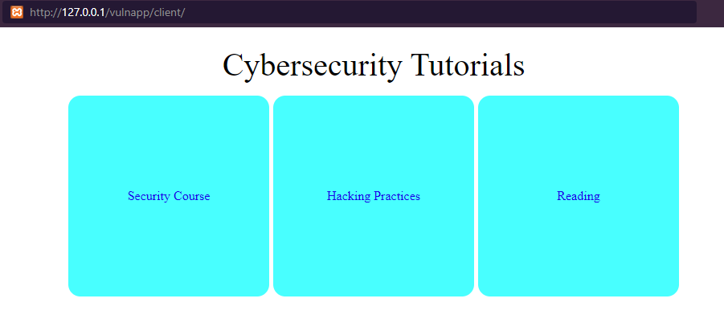
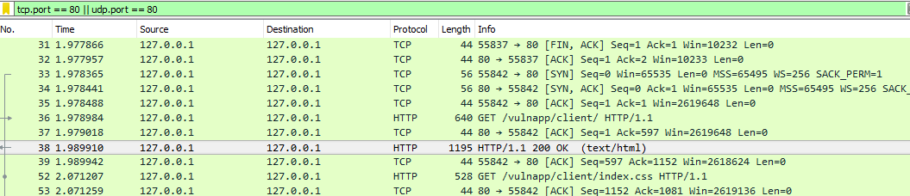
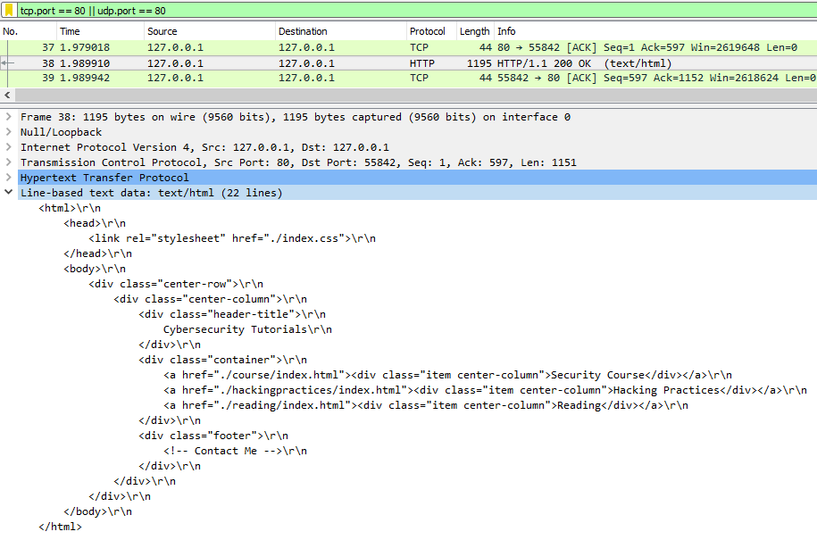
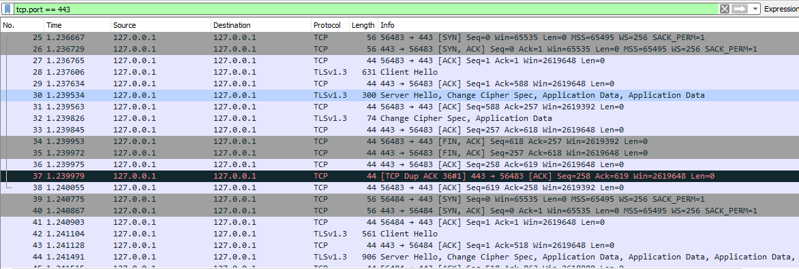
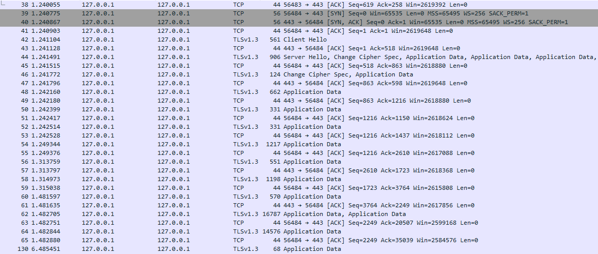
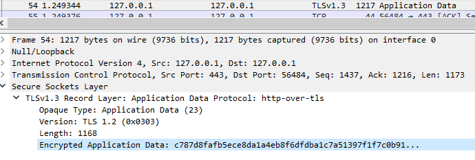

HTTP vs HTTPS
1. HTTP
To understand HTTP vs HTTPS, consider the investigation I
have conducted.
First, I load the page with normal HTTP. URL used...
http://127.0.0.1/vulnapp/client/

Next, I will record the traffic using Wireshark and see if
the content can be understood or not

As you can see, there are lots of traffic going on. But the one
which stands out is the GET request and the 200 OK response
from the web server.
Let's see what we have inside the 200 OK response.

Since the html code shows as plaintext, if you post your sensitive
information through HTTP, hackers online are willing to take it.
2. HTTPS
What should I use then? You should use HTTPS because it is "secured"
as the name says it HTTPS. Let's see what happens if we request
an HTTPS page.

There is nothing special here except for the TLS handshake which
starts whenever "client hello" is sent. I would like to show you
the plaintext html sent by the web server. But I can't because
everything is encrypted.

You must be yelling out loud what is the "Application Data". Alright,
this is what you can see.

See? They are encrypted which means HTTPS is definitely safer.
Good luck trying to crack the encrypted data.
Tools used:
1. XAMPP
2. Wireshark
3. Google Chrome